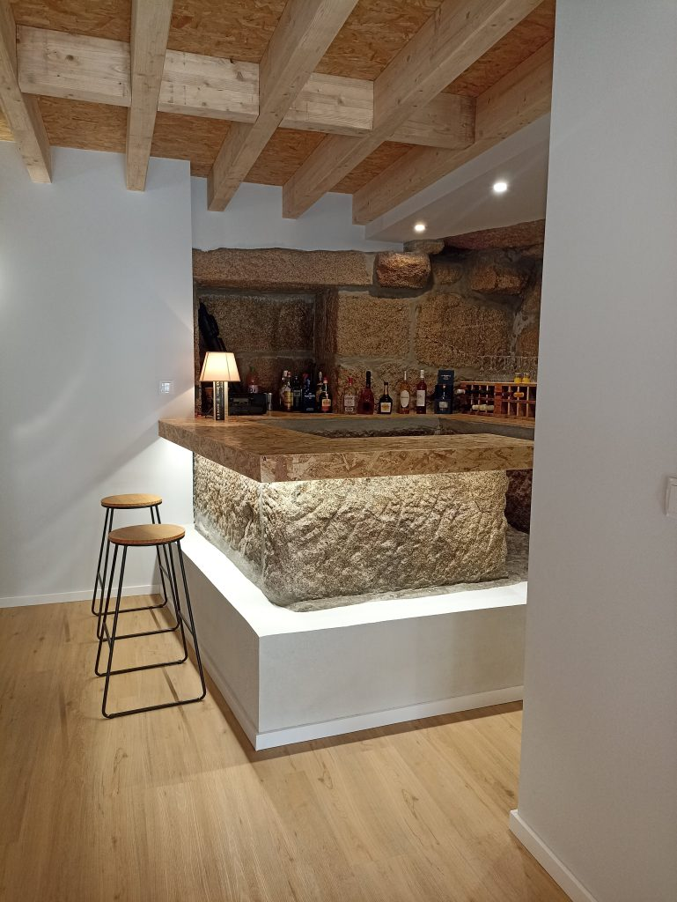
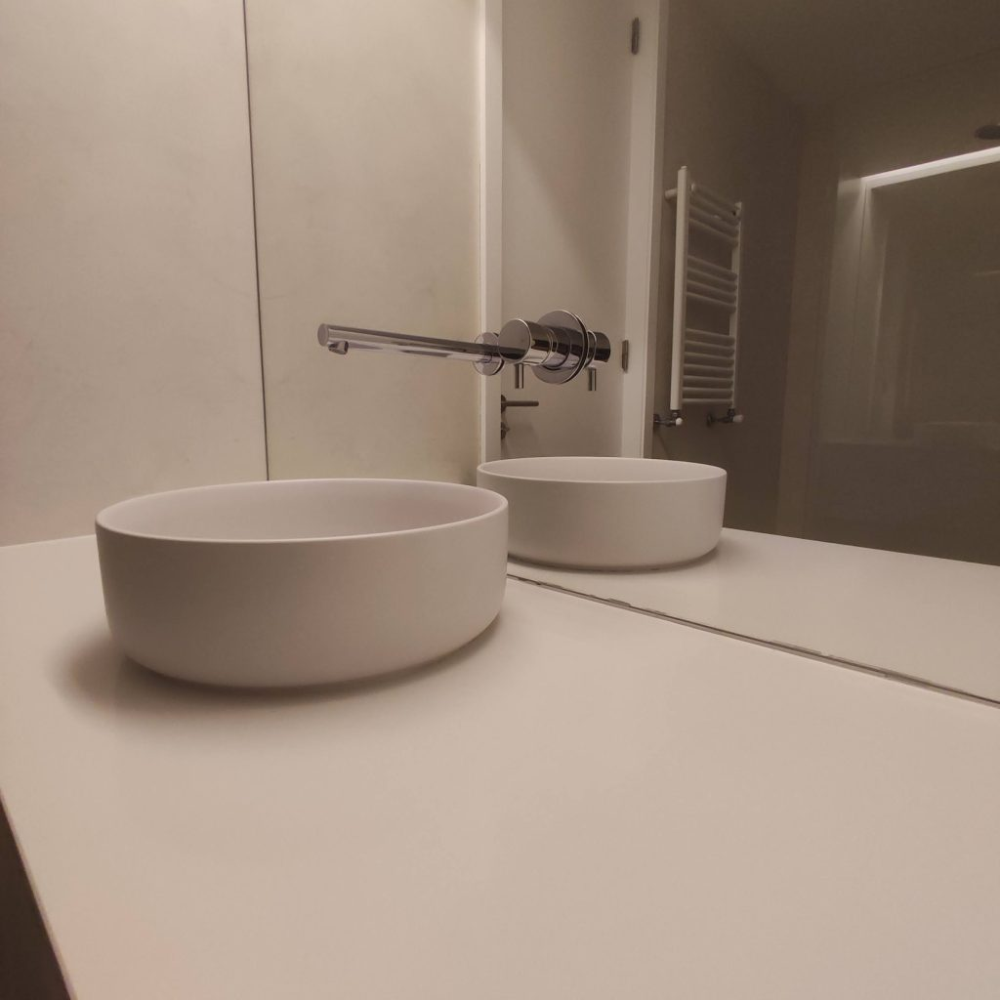

Tornar o método navegável
Parti das quatro etapas que a Brupaf já descreve. O visitante pode abrir uma delas e perceber que informação ajuda a preparar a conversa, sem tomar isso como um calendário de obra.
Engenharia e construção / Maia
Conheça o percurso da Brupaf, do diagnóstico à entrega, e prepare a informação sobre o espaço em que quer intervir.
Conhecer o processoUma ideia ganha contexto antes de ganhar forma.

01 / O processo
Quatro etapas descritas no site da Brupaf. Explore a informação que pode ajudar a enquadrar cada uma.
Comece pelo espaço, pela utilização e pelo que gostaria de alterar. Fotografias, medidas ou um projeto existente podem servir de ponto de partida para a avaliação.
02 / O portefólio
O site já mostra projetos de habitação, espaços comerciais e reabilitação. Estas imagens pertencem ao portefólio publicado pela Brupaf.

Interiores e detalhes apresentados no portefólio oficial da Brupaf.
Preparar a primeira conversa
O pedido pode começar pela fase do projeto, pelo tipo de espaço e pelo que ainda precisa de ser esclarecido.
Demonstração local: nada é enviado ou guardado. Não indique dados pessoais. O âmbito, a disponibilidade e as condições teriam de ser confirmados com a empresa.
Resumo local · nada foi enviado
A seleção não é uma recomendação técnica nem um orçamento.Uma proposta de Ricardo Almeida
A Brupaf já apresenta o seu método e um portefólio de projetos. A demonstração aproxima essas etapas da informação que o cliente pode preparar.
Parti das quatro etapas que a Brupaf já descreve. O visitante pode abrir uma delas e perceber que informação ajuda a preparar a conversa, sem tomar isso como um calendário de obra.
Proponho filmar uma etapa autorizada de uma intervenção e explicá-la junto do processo. O visitante poderia ver uma operação concreta, em vez de depender apenas da descrição do método.
O resumo junta fase, tipo de espaço e intenção. A pessoa pode identificar o que ainda não decidiu. Nesta demonstração, nenhum pedido é transmitido e não existe uma estimativa de preço ou prazo.
Um exemplo do meu trabalho
Na Canvas Custom Furniture, filmei e editei a produção e integrei o filme no website. Este projeto mostra como junto imagens do trabalho real à apresentação da empresa.
Ver o projeto CanvasRicardo Almeida · Vídeo e websites